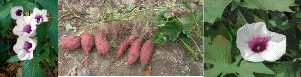

HORT 281 :: Lecture 23 :: ORIGIN, AREA, PRODUCTION, VARIETIES, PACKAGE OF PRACTICES FOR SWEET POTATO

Origin, area, production, varieties, package of practices for SWEET POTATO
Ipomoea batatas L. (2n = 90)
(Hindi: Shakarkand, Mitha alu) Family: Convolvulaceae
Sweet potato is cultivated for its sweet root tubers. It is mainly used for human food after boiling or steaming, baking or frying and also as animal feed. Since roots contain 16% starch and 4% sugar, it is sued for production of industrial starch, syrup and alcohol.
Origin and distribution
Sweet potato is a native of tropical America. It is an important tuber crop in tropical and sub-tropical countries like Africa, China and India. In India, it is grown mainly in Andhra Pradesh, Assam, Bihar, Tamil Nadu and Orissa.
Climate
Sweet potato requires well drained fertile soil rich in humus. Sandy loam soils with clay sub soil are ideal for tuber production. In heavy soils, tuber size is reduced. Ideal soil pH is below 5.2, liming is necessary.
Botany
Sweet potato is a hexaploid species with 90 somatic chromosomes. It is a perennial herb with trailing vines and with a cluster of a few medium sized tubers. For cultivation purpose, it is treated as an annual with duration of 90 to 120 days. Though plants produce viable seeds, highly heterozygous nature of the crop results in a heterogeneous population. Hence stem cuttings are used for propagation purpose.
Sweet potato has an extensive fibrous root system both at stem cuttings and at nodes touching soil. Some roots act as storage organs for storing reserve food. Storage roots may be fusiform, spindle or globular in shape and surface is smooth. Skin has white, red or light copper colour. Flesh may be white or with different combinations of orange and red.
Leaves are simple, alternate and stipulate. They vary in size and shape, occasionally in same plant. Shape varies from ovate to cordate, hastate or deeply lobed and may change on ageing. Leaf shape is an important character for identifying clones.
All clones do not flower and in flowering ones, duration and initiation of flowering vary. Flowers are axillary and borne solitary or in simple cymes. Flowers are bisexual. Corolla is attractive and funnel shaped formed by fusion of five petals. Anthesis starts before dawn and closes by 9-11 a.m. Pollination is entomophilies. Fruit is a capsule with false septa. Seed coat is hard and impervious to water. Hence, scarification is required for promoting germination.

Varieties
Sweet potato varieties differ in shape, size and colour of leaves, tubers and nature of tuber flesh. A number of local cultivars like Badrakali chuvala, Chakkaravalli, Anakomban and Kottaram chuvala are grown in Kerala. The Central Tuber Crops Research Institute (CTCRI), Thiruvananthapuram developed quite a good number of varieties and a brief description of them is given below:
Varsha: A semi-spreading hybrid with reddish purple skin, light yellow flesh and excellent cooking quality; yield 18-22 t/ha in 120-125 days.
Sree Nandini: A spreading variety with light cream skin, white flesh and good cooking quality; yield 20-25 t/ha in 100-105 days.
Sree Vardhini: A semi-spreading variety with purple skin, light orange flesh and high carotene content (1200 I.U.); yield 20-25 t/ha in 100-105 days. Tolerant to Feathery mottle virus.
Sree Ratna: A spreading variety with purple skin, orange flesh and excellent cooking quality; yield 20-26 t/ha in 90-105 days.
Sree Bhadra: A semi-spreading variety with light pink skin and cream flesh; resistant to root knot nematode; yield 20-27 t/ha on 90-95 days.
Sree Arun: A spreading variety with pink skin, cream flesh and good cooking quality; yield 20-28 t/ha in 90-100 days.
Sree Varun: A spreading variety with cream skin, cream flesh and good cooking quality; yield 20-28 t/ha in 90-100 days.
The Kerala Agricultural University developed an improved variety, Kanjangad, yielding 12.39 t/ha. Purple coloured and spindle shaped tubers have yellow soft flesh. It is tolerant to shade and weevil incidence.
IARI, New Delhi released two improved varieties viz., Pusa Safed, and Pusa Sunheri.
Pusa Safed: A white skinned variety with white flesh
Pusa Sunheri: A brown skinned variety with yellow flesh rich in carotene; boiled flesh is attractively orange yellow.
Acharya Ranga Agricultural University, Hyderabad developed following improved varieties:
Cross-4:Yield 20-30 t/ha in 90-105 days; highly susceptible to weevil infestation.
Rajendra Shakarkand-5: Yield 30 t/ha in 105-120 days; resistant to Fusarium wilt and Cercospora leaf spot disease.
Kalmegh: A short duration variety (90 days) yielding 26 t/ha.
Tamil Nadu Agricultural University has developed two varieties viz., Co.1 and CO.2 yielding 26 t/ha and 32 t/ha, in 135 days and 110-115 days, respectively.
Raising nursery
Sweet potato is mainly propagated by vine cuttings of 25-30 cm length. Cuttings for planting are multiplied in two nurseries – primary and secondary. Tubers in primary nursery are planted three months ahead of planting. A nursery area of 10m2 is required to raise vines for planting one hectare. Ridges are prepared at 60 cm apart and tubers of 125-150 g weight are planting and irrigate as and when required. Clip off vines to a length of 20-30 cm at 40-45 days after sowing tubers for planting in secondary nursery.
A 500 m2 secondary nursery is required to plant cuttings obtained from 100 m2. Plant the cuttings at 25 cm apart in ridges taken at a spacing of 60 cm. 5 kg urea may be applied at 15-30 days after planting in nursery. Clip off cuttings in 20-30 cm length after 45 days from middle and top portion of vines. Cut vines are stored with intact leaves in shade for two days prior to planting in main field.
Preparation of main field and planting
Vines are planted during June-July for a rainfed crop. Crop. Under irrigated conditions, plant during October-November in upland and during January-February in low lands for summer crop. Main field is prepared by making ridges of 25-30 cm high at 60 cm apart after thorough ploughing. 20-30 cm long vines are buried horizontally with 2-3 nodes below soil, leaving the remaining portion above soil.
Manures and fertilizers
Apply 5 tonnes of farmyard manure / ha at the time of preparation of ridges. A fertilizer dose of 50:25:50 kg NPK / ha is recommended, of which 50% of N, full P and K to be applied as basal dose. Remaining 50% of N is applied one month after along with weeding and earthing up.
Irrigation
During rabi and hot seasons, 12-14 irrigations are required at an interval of 10 days for heavy yield.
Harvest
Harvesting is done by digging out tuber with pick-axe when leaves turn yellow in colour. Tubers are cleaned and packed in gunny bags for marketing.
Yield: 6-9 t/ha for rainfed crop & 12-15 t/ha under average management.
Storage
Red skinned varieties store better than white skinned varieties. Tubers are stored better at 15oC and 85% RH. Tubers can also be stored for 2-3 months in a pit covered with straw.
Pests and diseases
Sweet potato weevil (Cylas formicarius) is the most important pest causing severe damage to the crop. Adult weevil makes puncturing on vines and tubers. Grubs bore and feed by making tunnels. Even slightly damaged tubers are unsuitable for consumption due to bitterness. Yield loss is up to 100% in severe cases. On an average, 20-55% tuber loss occurs. Integrated pest management practices recommended for control include dipping vine cuttings in Fenthion or Fenitrothion or Monocrotophos (0.05%) solution for 10 minutes before planting. Reridging the crop two months after planting, installing synthetic sex pheromone traps @ 1 trap / 100 m2 area to collect and kill the male weevils and destroying crop residues after harvest by burning are recommended control measures.
********
1. Sweet potato is also known as __________
a. Spanish potato b. Indian potato c. Chinese potato d. Potato beans
2. Sweet potato belongs to __________ family
a. Suphorbiaceae b. Convolulaceae c. Umbelliferae d. Fabaceae
3. Sweet potato is propagated by _______________
a. Terminal stem cutting b. Tuber c. Grafting d. Air layering
4. ___________ is the major producer of sweet potato
a. India b. China c. Canada d. Egypt
5. The yellow flesh of sweet potato contains high amount of ________
a. Calcium b. Boron c. Carotene d. Niacin
| Download this lecture as PDF here |